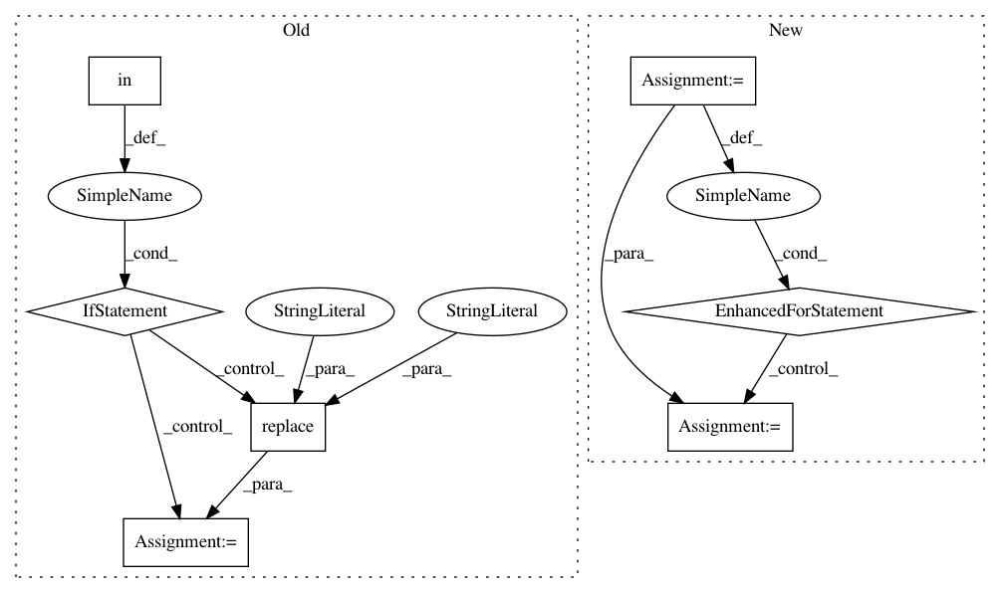

3d03ae2086b232cb6803507ae4defd997c256ec9,tensorflow/python/distribute/multi_process_lib.py,,_set_spawn_exe_path,#,90
Before Change
path = None
// If all we have is a python module path, we"ll need to make a guess for
// the actual executable path.
if "bazel-out" in sys.argv[0]:
// Guess the binary path under bazel. For target
// //tensorflow/python/distribute:input_lib_test_multiworker_gpu, the
// argv[0] is in the form of
// /.../org_tensorflow/tensorflow/python/distribute/input_lib_test.py
// and the binary is
// /.../org_tensorflow/tensorflow/python/distribute/input_lib_test_multiworker_gpu
org_tensorflow_path = sys.argv[0][:sys.argv[0].rfind("/tensorflow")]
if org_tensorflow_path.endswith("/org_tensorflow"):
binary = os.environ["TEST_TARGET"][2:].replace(":", "/", 1)
possible_path = os.path.join(org_tensorflow_path, binary)
logging.info("Guessed test binary path: %s", possible_path)
if os.access(possible_path, os.X_OK):
path = possible_path
if path is None:
logging.error(
"Cannot determine binary path. sys.argv[0]=%s os.environ=%s",
sys.argv[0], os.environ)
After Change
// -> tensorflow/python/my_test
path_to_use = None
guess_path = sys.argv[0][:-3]
guess_path = guess_path.split(os.sep)
for path_reduction in range(-1, -len(guess_path), -1):
possible_path = os.sep.join(guess_path[:path_reduction] +
[guess_path[-1]])
if os.access(possible_path, os.X_OK):
path_to_use = possible_path
break
// The binary can possibly have _gpu suffix.
possible_path += "_gpu"
if os.access(possible_path, os.X_OK):
path_to_use = possible_path
break
if path_to_use is None:
raise RuntimeError("Cannot determine binary path")
sys.argv[0] = path_to_use
// Note that this sets the executable for *all* contexts.
In pattern: SUPERPATTERN
Frequency: 3
Non-data size: 7
Instances
Project Name: tensorflow/tensorflow
Commit Name: 3d03ae2086b232cb6803507ae4defd997c256ec9
Time: 2020-11-18
Author: crccw@google.com
File Name: tensorflow/python/distribute/multi_process_lib.py
Class Name:
Method Name: _set_spawn_exe_path
Project Name: hellohaptik/chatbot_ner
Commit Name: e870ef14c590502fb0dc5ff3199e2602a87ec008
Time: 2019-03-18
Author: jain.chirag925@gmail.com
File Name: ner_v1/detectors/numeral/budget/budget_detection.py
Class Name: BudgetDetector
Method Name: _detect_max_budget
Project Name: sassoftware/python-dlpy
Commit Name: 4cf94b4f157424e41be9cd4f45a9d0b3cf1bbfe5
Time: 2018-10-25
Author: Ethem.Can@sas.com
File Name: dlpy/layers.py
Class Name:
Method Name: _unpack_config